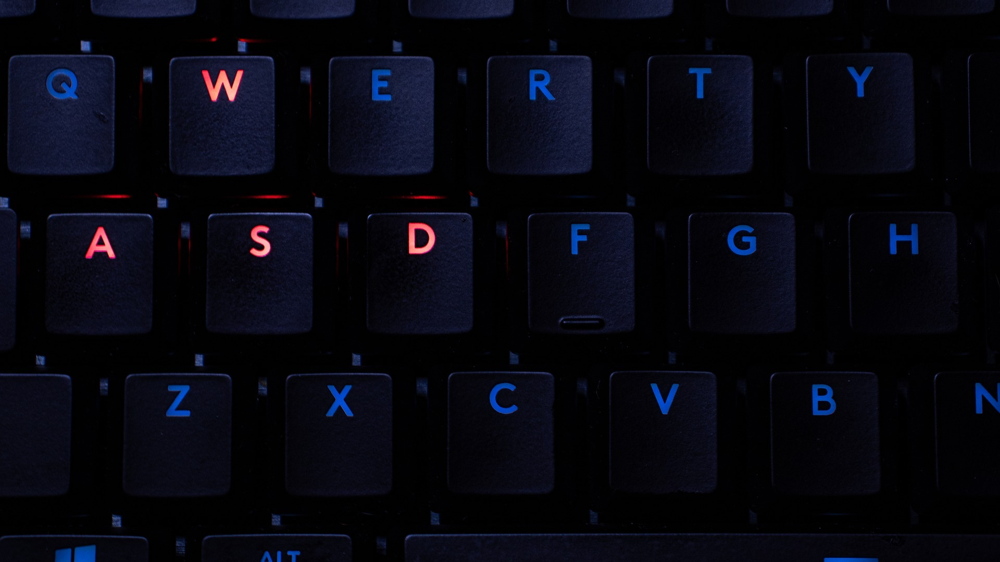

La importancia de elegir el teclado adecuado para programar
El teclado es una herramienta esencial para cualquier programador, ya que es la principal
forma de ingresar código y comandos. Aunque pueda parecer un detalle menor, elegir el teclado adecuado
puede marcar la diferencia en cuanto a la comodidad, la eficiencia y la precisión en el trabajo.
Existen varios factores a considerar al elegir un teclado para programar. En primer lugar, la
disposición de las teclas es un elemento clave. Muchos programadores prefieren las teclas mecánicas, ya
que proporcionan una respuesta táctil y auditiva que facilita la escritura rápida y precisa. Además, la
disposición de las teclas, especialmente la de los caracteres especiales y las teclas de acceso rápido,
puede afectar la eficiencia y el flujo de trabajo.
Otro factor a tener en cuenta es la ergonomía. Los teclados ergonómicos están diseñados para reducir la
tensión en las manos, las muñecas y los brazos, lo que puede prevenir lesiones por esfuerzo repetitivo y
aumentar la comodidad y la productividad durante largas sesiones de programación.
También es importante considerar la conectividad y la compatibilidad. Algunos teclados están diseñados
específicamente para trabajar con ciertos sistemas operativos o programas de codificación, mientras que
otros son más versátiles y pueden funcionar con una variedad de dispositivos y software.
En conclusión, la elección del teclado adecuado para programar es importante para garantizar la
comodidad, la eficiencia y la precisión en el trabajo. Al considerar la disposición de las teclas, la
ergonomía y la compatibilidad, los programadores pueden encontrar el teclado que mejor se adapte a sus
necesidades y mejorar su experiencia de codificación.